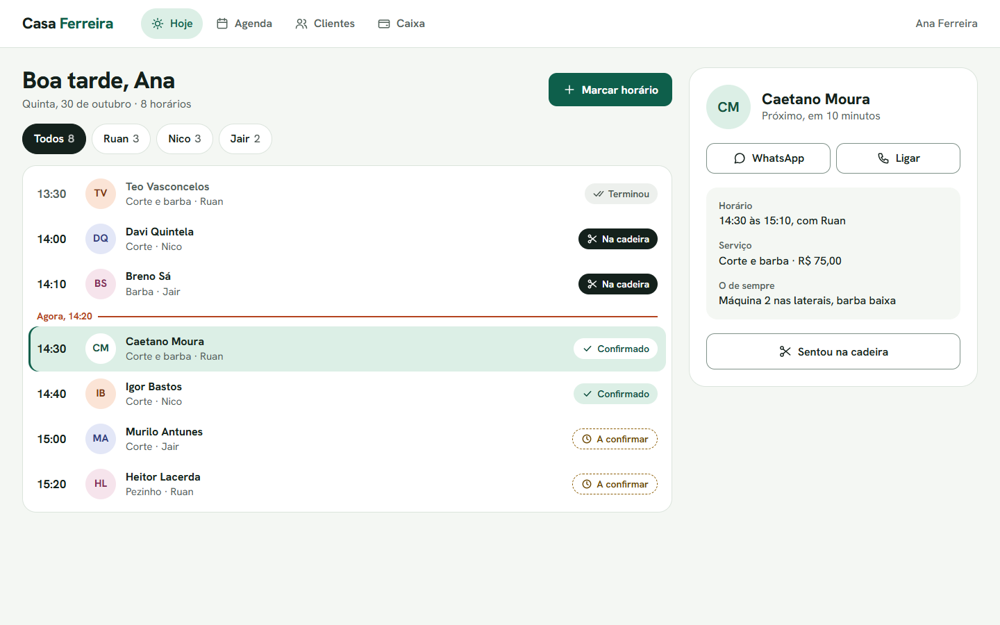
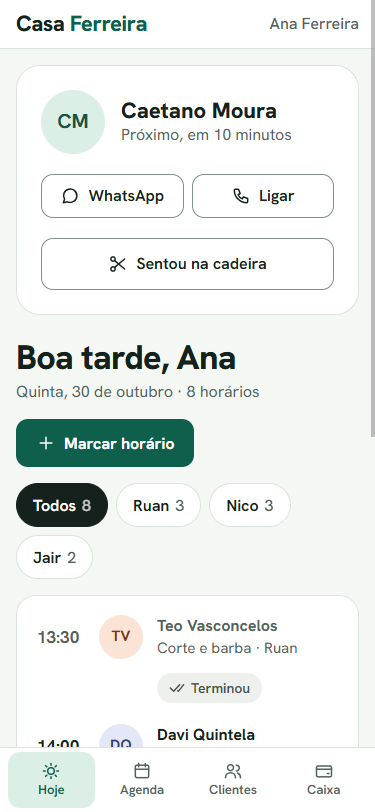
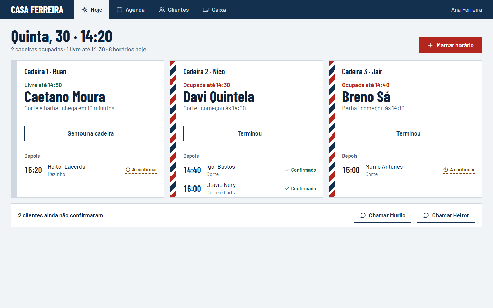
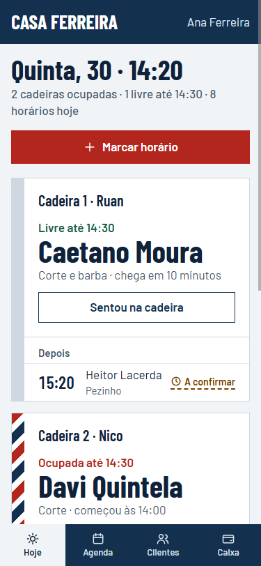
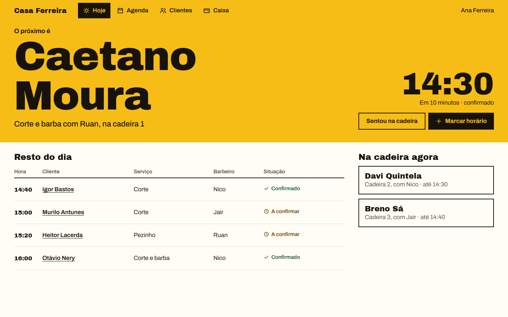
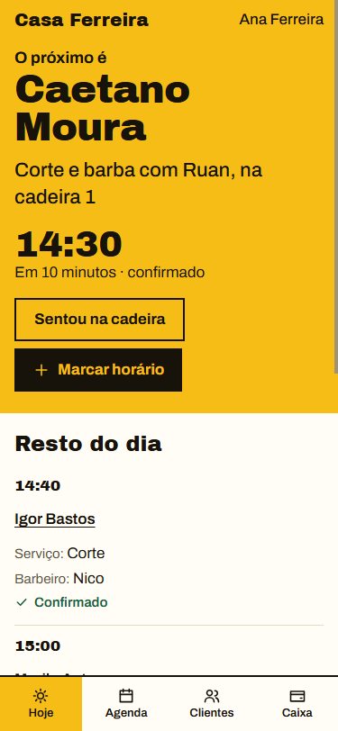

Tela Hoje de uma barbearia fictícia. Mesmos dados, mesmos padrões de uso. Mudam tipografia, composição, cor e voz.
Lista como a do WhatsApp: quem está acostumado com o celular entende sem aprender.
Assinatura: a linha "Agora" corta o dia ao meio.
Risco: o mais próximo do que outros sistemas já fazem.


O salão visto pelas cadeiras, não pelo relógio. Dá para ver quem está onde sem ler lista.
Assinatura: a listra do poste de barbeiro marca a cadeira ocupada.
Recomendo esta. É a única que só faria sentido numa barbearia.


Letras de cartaz, para ler do outro lado do salão com a tesoura na mão.
Assinatura: o nome do próximo cliente ocupa metade da tela.
Risco: a mais ousada, e a que mostra menos de uma vez.

